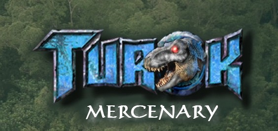
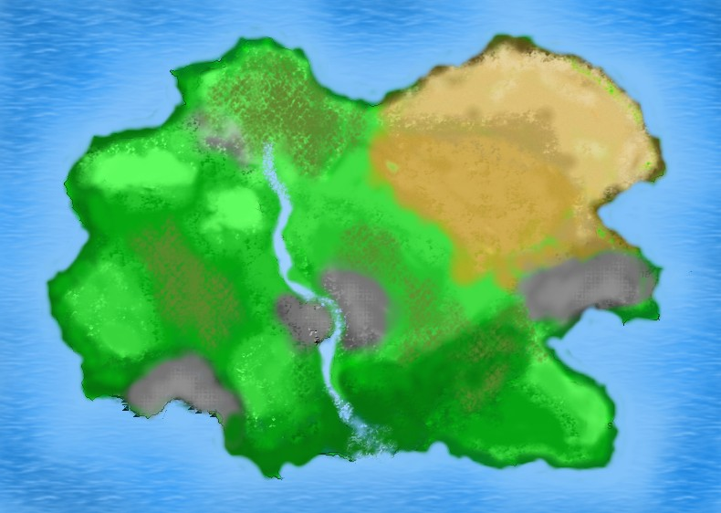
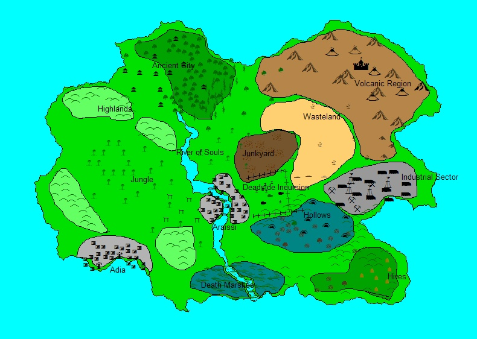

Lost
Land
Ah, the final culmination of all my modding efforts will result in a whole new battlefield people will wage war on (to compliment the Bering Sea that will already be in the game). The Lost Land has been the playing ground for most Turok games, but mostly as a series of cramped passageways and dense fog. But with the Soldner engine the Lost Land will be a large expansive battlefield with a variety of enviroments and also kilometer+ viewing ranges. These examples, plus things like the scattering animals and the day/night cycle, I plan to have this map promote different types of gameplay like urban combat, stealth, jungle warfare, and regular battlefield fighting.


Locations
Adia
This romanesque port city serves as one of the urban
battlegrounds for the mod. The gates will lead players through tight
apartment complexes, open courtyards, and dock areas.
Jungle
The heart and soul of the Turok arena is of course the jungle.
Choose a basic battle in the relatively open areas, or if you
feel
like a challenge (depending on how CPU intensive is will be) you can
venture into the thickest foilage where you won't be able to see you're
opponent until they're right on top of you.
Highlands
Out of the jungle the terrain becomes rougher a hilly, suited for more
strategic maneuvers and sniping, plus some scattered ruins to set up
bases.
Ancient City
Cut off from the technologically advanced parts of the Lost
Land, the Ancient City is filled with Mayan-type huts and huge temples.
In areas dense with tall trees, people will be able to (depending on
the
engine) do battle in treetop villages as well.
River of Souls
Da reever divides the Lost Land in half for more tactical
intrigue and now no longer kills whoever touches it (thanks to Turok's
environmental efforts) Some explorers will spot the remains of the
Primagen's lightship somewhere near the source of the river.
Araissi
Another big urban environent is the city of Araissi. Built closer to
the dangers of the Lost Land, the city was designed for
more military sensibilities, with fortress-like Moorish architecture
and
gun emplacements. But people can still sneak in through the complex
aqueduct system.
Deadside
Incursion
In
a normal world dead people stay dead, but the denizens of Deadside but
not have been around when they announced that. Thanks to the
dimentional
instability of the area, those folk managed to break through the
Netherscape and into Araissi's graveyard. spooky huh? ooooh!
Junkyard
The
Lost Land became what it is today by being a cross planar space time
continuum dimensional hotspot .....thing. Basically it's the community
trash can for the unvierse. Bits and pieces get torn off of other
worlds
and thrown in here. The Nexus is especially hot for portal
activity. Random junk gets warped in and out and people that go in
never
come out the same. Neato to fight in, hell for people like me to try
and make.
Death Marshes
In the lowlands where the River of Souls meets the sea lie the
Death Marshes. Why the existential labeling? Well, besides the giant
bug
bites the swamp is also home turf for the barbaric though slightly
comical Pur-Linn. So yes, plenty of large stone and wood fortifications
abound.
Hollows
Due to the nature of the Soldner engine, I can't recreate the
caves of the Blind One here, but the foggy valley will still feature
barren trees, mushrooms, vines and web covered rock formations to give
the proper feel and mood,
Hive
This is the spot where the Mantid aliens started their
infestation of the Lost Land, the surrounding terrain transformed into
organic hive structures. I dunno, you have to play Turok 2 to get the
proper idea.
Industrial Sector
Up in the mountains the servants of Oblivion developed their
industrial war machine, filled with quarries, mines, steel mills, power
plants, and all that fun stuff. S.T.A.L.K.E.R. fans will like this area.
Wasteland
Not featured in any Turok game that I know of, but every good
military game needs a desert area, so this is it.
Volcanic Region
As Blofeld, Dr.Evil, and The Director will tell you, nothing
screams villany like a volcano lair. The Campaigner is no exception and
ruled the multitudes in his heyday from his fortress in the craggy
volcanic region. What's there to say? The name is kind of
self-explanatory.
Galyanna
Due to the ambiguity of my resources, I still haven't figured
out whether Galyanna is supposed to be the capital of the Lost Land, or
the proper name for the Lost Land itself. So it anyone knows please let
me know before October.